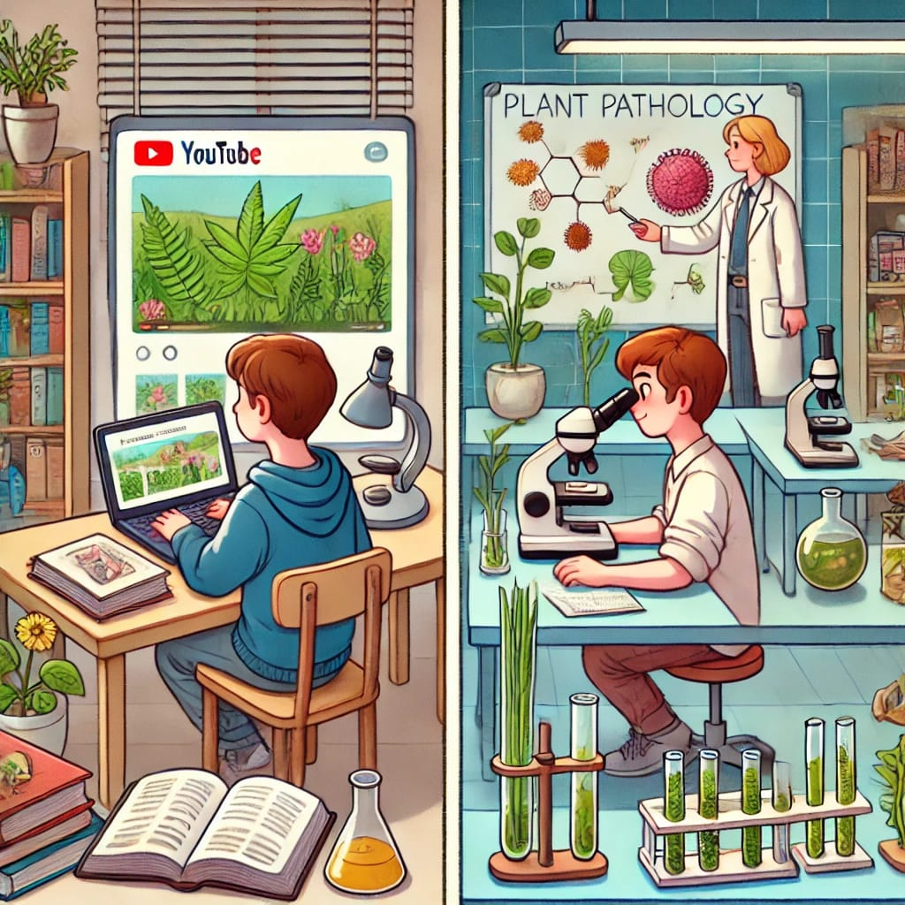

Aperte o play: otimizando aulas práticas com a sala de aula invertida
![]()
A vida de professor de disciplinas de graduação exige, em alguns casos, a repetição de várias aulas com o mesmo conteúdo para diferentes turmas práticas no mesmo semestre de oferecimento. No meu Departamento, oferecemos disciplinas que envolvem atividades práticas para quatro ou até oito turmas de 20 alunos, dependendo do semestre, o que significa repetir a mesma aula diversas vezes na mesma semana.
Nesse sistema o docente passa dois dias seguidos repetindo conteúdos, especialmente em um modelo tradicional, em que a primeira hora da aula é dedicada à apresentação teórica, seguida pela segunda hora com atividades práticas, como a observação de sintomas de doenças de plantas ou de estruturas dos patógenos em escala microscópica.
Por vezes me questiono se não estamos vivendo em um descompasso entre o que os estudantes esperam encontrar em uma sala de aula nos dias atuais e o sistema tradicional de ensino que, em muitos aspectos, ainda não evoluiu. Em um mundo onde o acesso à informação está a um clique de distância, o modelo de ensino centrado em longas exposições teóricas e pouca interação prática se torna cada vez mais desconectado das demandas e expectativas dos alunos. Essa discrepância não apenas compromete o engajamento, mas também a efetividade do aprendizado.
Não é difícil perceber o potencial das tecnologias e técnicas de ensino para tornar a rotina acadêmica mais eficiente e proveitosa para todos. Dedicar uma hora repetindo o mesmo conteúdo até oito vezes, quando isso poderia ser apresentado em uma aula gravada e assistida previamente pelos estudantes, abriria espaço para atividades práticas mais interativas e enriquecedoras durante o período presencial.
Neste contexto, técnicas como flipped classroom (sala de aula invertida), em que o aluno tem acesso prévio ao conteúdo teórico por meio de materiais digitais, permitindo que o tempo integral em sala seja dedicado a atividades práticas e discussões, seriam uma alternativa para otimizar o aprendizado.
A pandemia de COVID-19 nos ensinou muitas lições que podemos incorporar em novas rotinas e processos de ensino e aprendizado. Gravar uma aula teórica e disponibilizar os recursos de forma antecipada, para todas as turmas, é, a meu ver, uma excelente estratégia para este caso específico, o que garantiria também consistência. Além disso, a renovação periódica dos conteúdos garantiria que o material permanecesse relevante e atualizado.
A disponibilização de aulas gravadas de conteúdo essencialmente teórico pode ser complementada com materiais interativos, como quizzes online, para engajar os alunos. Essa abordagem permite que os estudantes avancem no conteúdo no próprio ritmo, revisando os pontos mais desafiadores quantas vezes forem necessárias, o que contribui para uma melhor assimilação do conhecimento. Com mais tempo disponível em sala, os professores podem atuar como facilitadores, promovendo debates, respondendo a dúvidas mais complexas e acompanhando de perto o desempenho dos estudantes nas práticas.
Ainda, esse modelo alivia a sobrecarga emocional e física do professor, permitindo um melhor equilíbrio entre a preparação de materiais e o engajamento com os alunos. A adoção de novas práticas pedagógicas, como o uso de tecnologias digitais e modelos híbridos, também estimula uma cultura de inovação nas instituições de ensino, fortalecendo a formação dos estudantes e preparando-os melhor para o mercado de trabalho atual.
E você, estudante, qual sua preferência? Estaria disposto a vir preparado para aula após assistir conteúdo teórico? E você, docente, o quanto está disposto a incorporar novos recursos didáticos? A evolução do ensino depende da disposição de ambos os lados em repensar suas práticas e abraçar inovações que tornem o aprendizado mais eficiente.

Texto publicado no LinkedIn. Faça login para discutir!
Back to top